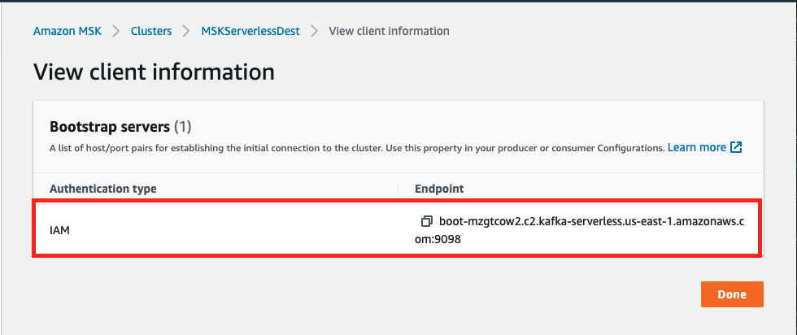

Setup pre-migration environment¶
Simulate pre-migration producer and consumerHeader anchor link¶
In this section of the lab, we will be simulating a pre-migration environment with an existing Apache Kafka source cluster (in this lab, this will be an AWS MSK cluster, but it doesn't have to be). This source cluster will have one topic (ExampleTopic), one producer producing to this topic, and a consumer reading from this topic. We will setup a sample source cluster used to simulate existing cluster.
Start a producer against the source Amazon MSK cluster¶
In the Cloud9 terminal, lets setup environment variables and connect to KafkaClientInstance1
export MSK_STACK=<<Stack Name>> # Looks like msk-team22 for example
export ssh_cmd1=$(aws cloudformation describe-stacks --stack-name $MSK_STACK --query 'Stacks[0].Outputs[?OutputKey==`SSHKafkaClientEC2Instance1`].OutputValue' --output text)
$ssh_cmd1
Answer yes to "Are you sure you want to continue connecting (yes/no)" and you should be connected to KafkaClientInstance1.
Go to the /tmp/kafka directory and take a quick look where configuration files and scripts have already been downloaded to this EC2 instance.
cd /tmp/kafka
ls -l
We will be using many of these files in the following steps of this lab.
Get MSK Cluster client information
Go to the Amazon MSK console. Click on the Provisioned MSK cluster that was created by CloudFormation (default name: MSKSrc-XXXX)
Click on View client information on the top right side of the page under Cluster summary.

Click on Copy under Bootstrap servers and paste it in a notepad application.
Repeat the same steps for the Serverless MSK Cluster that was created by CloudFormation (default name: MSKServerlessDest)

Run Environment Variable setup script
We use various environment variables in this lab, so let's run a small shell script to make things more convenient.
export brokersmsksource=<Source Bootstrap servers address>
export brokersmskdest=<Serverless Bootstrap servers address>
Example:
We add some variables to the bash profile and will verify the variables are set correctly, with the final "echo" statement.
export region=$(curl http://169.254.169.254/latest/meta-data/placement/region)
echo "export brokersmsksource=${brokersmsksource}" | tee -a ~/.bash_profile
echo "export brokersmskdest=${brokersmskdest}" | tee -a ~/.bash_profile
You should see a value from the last echo command. Make sure you see a value for $brokersmsksource before proceeding.
Next, we configure the KafkaClientInstance1 with Amazon MSK IAM authentication client.
cd /home/ec2-user/kafka/libs
wget https://github.com/aws/aws-msk-iam-auth/releases/download/1.1.0/aws-msk-iam-auth-1.1.0-all.jar
cd /home/ec2-user
mkdir iam-auth && cd ./iam-auth
wget https://github.com/aws/aws-msk-iam-auth/releases/download/1.1.0/aws-msk-iam-auth-1.1.0-all.jar
cd ../
cat <<EOF > /home/ec2-user/kafka/config/client-config.properties
# Sets up TLS for encryption and SASL for authN.
security.protocol = SASL_SSL
# Identifies the SASL mechanism to use.
sasl.mechanism = AWS_MSK_IAM
# Binds SASL client implementation.
sasl.jaas.config = software.amazon.msk.auth.iam.IAMLoginModule required;
# Encapsulates constructing a SigV4 signature based on extracted credentials.
# The SASL client bound by "sasl.jaas.config" invokes this class.
sasl.client.callback.handler.class = software.amazon.msk.auth.iam.IAMClientCallbackHandler
EOF
export CLASSPATH=/home/ec2-user/iam-auth/aws-msk-iam-auth-1.1.0-all.jar
echo "export CLASSPATH=${CLASSPATH}" | tee -a ~/.bash_profile
Let's go to the /home/ec2-user/kafka dir and create a topic called ExampleTopic.
cd /home/ec2-user/kafka
bin/kafka-topics.sh --create --bootstrap-server=$brokersmsksource --command-config /home/ec2-user/kafka/config/client-config.properties --replication-factor 3 --partitions 3 --topic ExampleTopic
Setup the Producer settings (including Glue Schema Registry and Monitoring)
cd /tmp/kafka
cp producer.properties_msk producer.properties_msk_dest
sed -i -e "s/BOOTSTRAP_SERVERS_CONFIG=/BOOTSTRAP_SERVERS_CONFIG=$brokersmsksource/g" producer.properties_msk
export schema_compatibility=FULL_ALL
export EXTRA_ARGS=-javaagent:/home/ec2-user/prometheus/jmx_prometheus_javaagent-0.13.0.jar=3800:/home/ec2-user/prometheus/kafka-producer-consumer.yml
Run the Producer and confirm the log output
java $EXTRA_ARGS -jar KafkaClickstreamClient-1.0-SNAPSHOT.jar -t ExampleTopic -pfp /tmp/kafka/producer.properties_msk -nt 8 -rf 10800 -nle -gsr -gsrr $region -iam -gar -gcs $schema_compatibility > /tmp/producer.log 2>&1 &
To kill the producer before the 3 hours are up, note down the pid (process id) of the producer process. Use kill
Tail the producer log file to see the producer sending events. Ctrl-C to exit from the tail command.
tail -f /tmp/producer.log
[Optional] Check to see if the schema got registered in Schema Registry.
In the AWS Glue Console, under Schema registries -> Schemas, you should see the ExampleTopic registered as the Producer was run with Glue Schema Registry args: -gsr -gsrr $region -gar -gcs $schema_compatibility
Run a Consumer¶
Now, let's configure and run a Kafka Consumer application reading from the previously created ExampleTopic.
Setup Consumer environment settings
cd /tmp/kafka
cp consumer.properties consumer.properties_dest
sed -i -e "s/BOOTSTRAP_SERVERS_CONFIG=/BOOTSTRAP_SERVERS_CONFIG=$brokersmsksource/g" consumer.properties
export EXTRA_ARGS=-javaagent:/home/ec2-user/prometheus/jmx_prometheus_javaagent-0.13.0.jar=3900:/home/ec2-user/prometheus/kafka-producer-consumer.yml
Run the Clickstream consumer. The consumer will run in the background for 3 hours.
To kill the consumer before the 3 hours are up, note down the pid (process id) of the consumer process.
Use kill
java $EXTRA_ARGS -jar KafkaClickstreamConsumer-1.0-SNAPSHOT.jar -t ExampleTopic -pfp /tmp/kafka/consumer.properties -nt 3 -rf 10800 -src msksource -gsr -iam -gsrr $region > /tmp/consumer.log 2>&1 &
The output of the previous command should be similar to this:

Tail the consumer log file to see the consumer reading messages and making progress. Ctrl-C to exit from the tail command.
tail -f /tmp/consumer.log